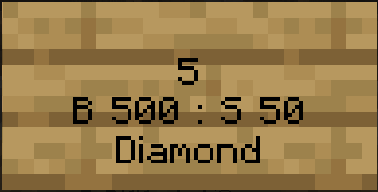

Shop de Joueurs
1.Création de Votre Propre Magasin
Utilisez des coffres et des panneaux pour créer votre propre magasin avec ChestShop. Voici comment procéder :
Placez un Coffre : Posez un coffre pour stocker vos articles à vendre.
Placez un Panneau : Au-dessus ou à côté du coffre, placez un panneau.
Configurer le Panneau : Laissez la première ligne du panneau vide, dans la deuxième ligne marquez la quantité d'articles à acheter ou à vendre, dans la troisième ligne, si vous voulez vendre l'article, écrivez B "prix de l'article à acheter",si vous voulez acheter l'article, écrivez S "prix de l'article à vendre", enfin, si vous voulez vendre l'article à un prix et l'acheter à un autre, écriver B "prix de l'article à acheter" : S "prix de l'article à vendre". Dans la dernière ligne, écrivez le nom de l'article en anglais
Par exemple, si je veux vendre 5 unités de diamant à 500$ et les acheter à 50$, mon panneau ressembleras à ceci :
2.Explorer les Marchés des Autres Joueurs
PlayerWarps vous permet de créer des points de téléportation vers des endroits spécifiques, y compris les marchés des autres joueurs. Suivez ces étapes pour explorer les magasins de la communauté :
Créer/Supprimer un Warp : Vous pouvez utilisez la commande /pw set [Nom du Warp] pour créer un point de téléportation à votre magasin mais il vous faudras dépenser 500$ pour créer le PlayerWarp. Vous pouvez utiliser la commande /pw remove [Nom du warp] pour supprimer vorte PlayerWarp et vos 500$ vous serons rendus.
Téléportation : Les joueurs peuvent maintenant utiliser /pw [Nom du Warp] pour se téléporter directement à votre magasin.
Pour plus d'informations et de commandes sur le plugin PlayerWarp, vous pouvez effectuer la commande /pw help en jeu.